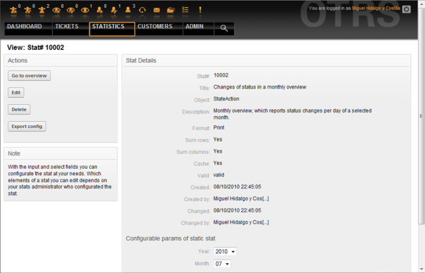
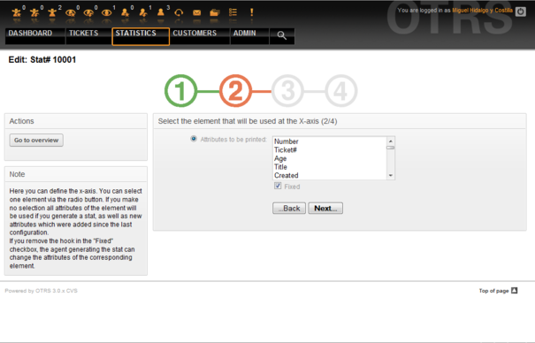
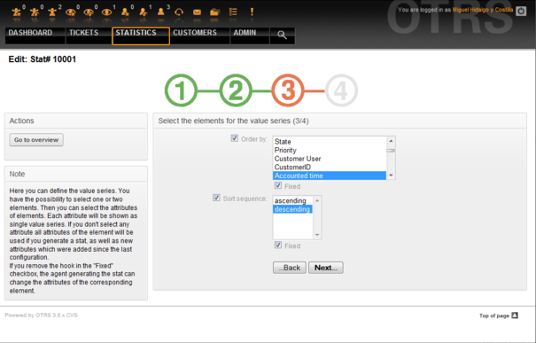
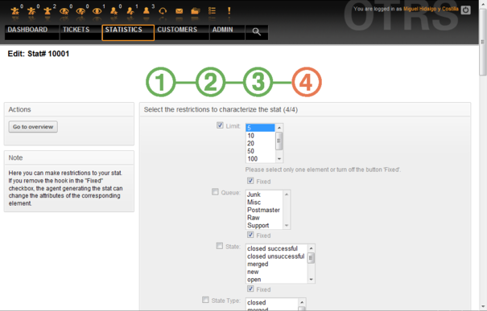

Модуль отчетов OTRS дает возможность оперативно отслеживать статистику и создавать пользовательские отчеты, связанные с использованием OTRS. OTRS использует общеупотребляемый термин "stat" для обозначения отчетов с различными показателями.
Правильная настройка модуля статистики OTRS связана с множеством различных условий. К ним относятся различные модули системы OTRS, подлежащие оценке, настройки прав доступа пользователей, признаки, которые должны быть рассчитаны и уровень их сложности, легкость настройки модуля статистики, скорость и эффективность вычислений, поддержка множества вариантов вывода информации.
Статистические элементы, такие как например файлы, которые дополняют функциональные возможности модуля статистики для конкретых требований, могут быть интегрированы для подсчета сложной статистики.
Когда вы вошли в систему как агент, в меню интерфейса будет отображатся пункт "Отчеты". Этот раздел имеет множество различных подменю, как это показано на Рисунке.
Рисунок: Опции меню Статистика.
Различные варианты представленные в меню статистики:
Overview. Предоставляет список различных предварительно сконфигурированных отчетов.
Новая. Требуются права rw.
Импорт. Требуются rw-права.
Выберите ссылку "Отчеты" в меню, а затем подменю "Обзор". На открывшейся странице будет представлен список всех предварительно настроеных отчетов, которые агент уже может использовать (см. Рисунок ниже).
Рисунок: Просмотр стандартных запросов.
Для каждого из отчетов, перечисленных в Обзоре предоставлена следующая информация:
Stat#. Уникальный номер отчета.
Заголовок. Заголовок отчета.
Объект. Объект, который используется для генерации статистики. В случае статической статистики не отображается ни один объект, поскольку в ее генерации динамические объекты не участвуют.
Описание. Краткое описание отчета.
Когда модуль статистики установлен, он поставлятся с несколькими предустановленными отчетами, выборочно встроенными в систему. Они приведены в виде списка на странице "Обзор". Если список слишком большой и не помещается на одну страницу, у агента есть возможность просматривать другие страницы. Список отчетов может быть отсортирован по своему вкусу, путем нажатия на желаемый заголовок столбца в списке. Чтобы создать конкретный отчет, нажмите на соответствующие stat-номер, связанный с отчетом. В результате откроется интерфейс просмотра отчета.
Пользовательский интерфейс предоставляет параметры настройки отчетов (см. Рисунок ниже).
Рисунок: Просмотр определенного отчета.
Параметры конфигурации для конкретного отчета могут быть установлены путем выбора ряда возможных опций. Как автор отчета так и другие пользователи с соответсвтующими правами доступа могут создавать настройки.
На странице отображается следующее:
Возможные действия:
Перейти к обзору. Ссылка, ведущая обратно к Просмотру списка отчетов.
Редактировать. Редактировать имеющуюся структуру отчета (требуются права для чтения и записи, rw).
Удалить. Удалить текущий отчет (требуются права для чтения и записи, rw).
Экспортировать настройки. Экспортировать настройки отчета с помощью загрузки файла (требуются права для чтения и записи, rw).
Традиционно: функции Экспорт и Импорт позволяют создавать и тестировать отчеты та тестовых системах с их легкой дальнейшей интеграцией в производственную систему.
Подробности отчета:
Отчет#. Номер отчета.
Заголовок. Заголовок отчета.
Объект. Объект, который используется для создания отчета.
Описание. Описание цели отчета.
Формат. Выходной формат отчета. В зависимости от конфигурации, можно выбрать один из следующих форматов вывода:
CSV.
Печать.
Графические линии.
Столбцовая диаграмма.
Диаграмма.
Точечная диаграмма.
Точечно-линейная диаграмма.
Диаграмма
Круговая "пирожок"-диаграмма.
Размер в пикселях. Размер графиков/диаграмм в пикселях. Эта опция доступна только в том случае, если в настройках отчета разрешены графики. Все часто используемые графические размеры настраиваются OTRS-администратором в SysConfig. Затем, во время настройки отчета, агент может выбрать необходимый формат из всех доступных.
Количество строк. Указывает когда отчет заменяется колонкой, чьи ячейки содержат сумму соответствующих строк.
Количество колонок. Указывает когда отчет заменяется строкой, чьи ячейки содержат сумму соответствующих колонок.
Кэш. Указывает когда сгенерированный отчет кэшируется в файловой системе.
Действительный. Может быть установлен в значение "недействительный" если по какой то причине отчет временно не должен запускаться. Кнопка "Старт" в нижней части правой панели больше не отображается. Таким образом отчет не может быть создан.
Создан. Время создания отчета.
Создан (кем). Имя агента, который создал отчет.
Изменен. Время последней модификации отчета.
Изменен кем. Имя агента, который последним внес изменения в отчет.
X-axis. Используя эту функцию, агент может переключать x и y axes (только в том случае, если эта опция активирована OTRS-администратором).
Общая информация сопровождается информацией о самом отчете. Есть два различных шаблона просмотра отчета (или статистики):
Static stat view. Static report generators can be integrated into the stats module (see Figure below).
Figure: Viewing a static report.
Dynamic stat view (see Figure above). They can be displayed in two different ways:
Неизменяемые настройки. Создатель отчета не имеет прав для изменения этих полей.
Изменяемые настройки. Параметры конфигурации таких отчетов могут быть изменены агентом.
Нажатие кнопки "Пуск" (в нижней части экрана) является последним шагом при создании отчета. Есть две возможные причины, когда эта кнопка не будет отображаться:
Отчет был установлен недействительным и, таким образом отключен.
Отчет был настроен не аккуратно и, следовательно, не может выполнятся. В этом случае необходимую информацию можно найти в разделе уведомлений OTRS (внизу, под навигационной панелью).
Если настройки на странице Просмотр неверны, эта страница отображается опять, после нажатия кнопки "Пуск" и информация о введеных неверных данных будет выведена в разделе уведомлений.
Агенты, которые имеют права на запись, могут редактировать настройки существующего отчета, запустив пользовательский веб-интерфейс модуля статистики. В качестве альтернативы они могут создать новый отчет. Соответствующие страницы могут быть запущены следующим образом:
Редактировать: Используя кнопку "Редактировать" в шаблоне просмотра статистики.
Новый: Используя ссылку "Новый" в меню Статистика навигационной панели, или кнопку "Добавить" на странице Просмотр.
Статистика редактируется с помощью мастера в четыре этапа:
Общие технические условия.
Определение элементов для X-axis.
Спецификация значений ряда.
Выбор ограничений для отчета.
Шаги с 2-4 необходимы только для создания отчетов с динамической статистикой. Для статической статистики требуется только общая информация (пункт 1).
Информация о том, как обрабатывать страницу приводится на каждом из этих экранов, ниже панели "Действия" панели Подсказок.
Если введены неправильные данные, предыдущий пользовательский интерфейс отображатеся заново, на этот раз уже с информацией о неправильных входных данных. Эта информация отображается в OTRS в разделе уведомлений. Следующий пользовательский веб-интерфейс для ввода отображатеся только в том случае, если все поля формы заполнены правильно.
Общие спецификации. Это первая страница мастера Редактирования (см. Рисунок ниже).

Рисунок: Редактирование общих спецификаций отчета.
На странице приведенной на Рисунке доступно большое количество общих спецификаций и настроек, которые можно редактировать:
Заголовок. Должны в сжатой форме отражать назначение (цель).
Описание. Более подробная информация об отчете, типах конфигурационных параметров и т.д.
Динамический объект. Если установленная система OTRS предоставляет различные динамические объекты, один из них может быть выбран. Объекты отвечают требованиям отдельных модулей.
Static file. Обычно эта возможность не отображается до тех пор, пока отображаются статические файлы, назначеные отчету. Если "Статический файл" отображается, позже, очень важно поставить галочку в поле и выбрать режим генерации (динамический с динамический объектом или статический с файлом). Если выбран статический файл, пользовательский веб-интерфейс 2-4 не отображается как статический файл содержащий все необходимые настройки.
Настройки прав доступа. Содействие ограничению групп (и, следовательно, агентов), которые позже могут просматривать и генерировать предварительные отчеты. Таким образом, различные отчеты могут быть выделена для различных отделов и рабочих групп, которые в них нуждаются. Можно выделить одину статистику для различных групп.
Пример 1: Выбрана "stats" группа. Отчет доступен для просмотра для всех пользователей имеющих по крайней мере права на группу "stats . Этот доступ доступен по умолчанию.
Пример 2: Была выбрана группа под названием "продажи". Все пользователи, имеющие права ro (read only) к этой группе могут выдеть статистику в режиме просмотра э генерировать ее. Однако отчет не будет доступен для просмотра другим пользователям.
Формат. Формат отображения статистики. В зависимости от конфигурации, могут быть выбраны следующие один или несколько форматов:
CSV.
Печать.
graph-lines.
graph-bars.
graph-hbars.
graph-points.
graph-lines-points.
graph-area.
graph-pie.
Размер графика. Выберите размер диаграммы в пикселях. Этот выбор необходим только в том случае, если графический формат вывода был выбран в "Формат". Все графические размеры, которые можно использовать определяются в OTRS в SysConfig. При настройке отчета, агент может предварительно выбрать все соответствующие форматы.
Количество строк. Указывает когда отчет заменяется колонкой, чьи ячейки содержат сумму соответствующих строк.
Сумма столбцов. Указывает когда отчет заменяется строкой, чье ячейки содержат сумму соответствующих строк.
Кэш. Указывает на то, что созданный отчет должен кэшироваться в файловой системе. Это позволяет существенно экономить вычислительные мощности и время, но должно использоваться только в том случае если содержание отчета больше не будет изменятся.
Кэширование автоматически прекращается, если отчет не содержит временных обозначений, или когда временные обозначения указывают на будущее.
В случае редактирования закэшированного отчета удаляются все закэшированные данные.
Действительный. Устанавливается в значение "недействительный" если ранее сконфигурированный отчет по какой то причине не должен выполнятся. Кнопка "Статистика" также не отображатеся в правом нижнем углу блока. Отчет больше не генерируется.
Определение элементов для X-axis. Это конфигурация для элементов, которые используются для описания X-axis или, если используются таблицы, имя столбца применяется для X-axis (см. Рисунок ниже).
Рисунок: Определение элементов для X-axis.
Во-первых, элемент выбирается с помощью опционального поля. Потом нужно выбрать два или более атрибутов элемента. Если выбраных атрибутов нету, используются все атрибуты, в том числе и те, которые были добавлены после конфигурации отчета.
Если отключена настройка "Фиксированный", агент, генерирующий отчет, может изменить атрибуты соответствующего элемента в меню "Вид" пользовательского веб-интерфейса.
Элементы времени отличаются от периодов времени. Тип и число элементов зависит от использующихся динамических обьектов и сильно зависит от этого.
Если все входные данные введены правильно, нажатие кнопки "Следующий шаг" открывает форму "Серия значений". Кроме этого, есть возможность заново вернуться к редактированию предыдуших разделов.
Спецификация серии значений.
На третьем шаге настройки отчета нужно определить серию значений (см. Рисунок ниже). Позже они будут использованы для формирования графиков или различных серий в табличном виде.
Рисунок: Определение значений серии.
Если выбран определенный элемент, каждый выбранный атрибут будет соответствовать значеню серии (см. ниже Пример 19-1).
Пример 4.19. Определение значения серии - один из элементов
Элемент Очередь:
Серия значений 1 = Raw
Значение серии 2 = Junk
....
Если для формирования значения ряда, выбрано два элемента, каждый выбраный атрибут первого элемента комбинируется с атрибутом второго элемента (см. ниже Рисунок 19-2).
Пример 4.20. Определение значения серии - один из элементов
Элемент 1 очередь, Элемент 2 статус:
Значение создания 1 = Raw - открыть
Серия значений 2 = Raw - успешно закрыта
Серия значений 3 = Junk - открыто
Серия значений 4 = Junk - успешно закрыто
Выбор из трех или более элементов не допускается.
Кроме этого эти условия распостраняются и на выбор атрибутов и флажок "Основные" как для "X-axis":
Если для элемента не выбрано никаких атрибутов, то используются все атрибуты, включая и те, которые были добавлены после настройки отчета.
Если параметр "Фиксированный" отключен, агент, который создает отчет может изменять атрибуты соответствующих элементов.
Установка ограничений отчета. Это четвертый и последний этап конфигурации (см. Рисунок ниже). Ограничения служат для ограничения результатов выбранных критериев. В ряде случаев не должно быть никаких ограничений.
Рисунок: Определение ограничений.
После установки всех ограничей, конфигурация отчета завершается нажатием кнопки "Готово".
Для доступа к пользовательскому интерфейсу Импорта (см. Рисунок ниже) перейдите по ссылке "Статистика", а затем выберите "Импорт". Альтернативный способ - на странице "Обзор" нажать кнопку Импорт, это приведет к тому же результату, но для этого действия требуются права для чтения и записи "RW".
Рисунок: Пользовательский веб-интерфейс для Импорта.
Очень удобная функция, значительно облегчает импорт статистики, особенно в сочетании с возможностями модуля экспорта. Статистику можно создать и протестировать на тестовых системах, а затем импортировать в реальную систему.
Импорт осуществляется путем простой загрузки файла. После этого, для импорта статистики, автоматически открывается пользовательский интерфейс "Вид".
Этот раздел предоставляет информацию о задачах и функциях администратора OTRS, который работает с модулем статистики.
Нет новых очередей и/или групп, созданых при установке модуля статистики.
В конфигурации по умолчанию модуль регистрации дает всем агентам группы "статистика" права доступа к модулю статистики.
Доступ в соответствии с разрешенными настройками:
rw. Разрешает настройку статистики и отчетов.
ro. Разрешает генерацию предварительно сконфигурированной статистики и отчетов.
OTRS-администратор самостоятельно определяет когда агенты с правами для генерации предварительно настроенных отчетов выделяются в ro-права для группы "статистика", или если их соответствующие группы добавляются в модуль регистрации в SysConfig.
Группы SysConfig Framework:Core::Stats, Framework:Core::Stats::Graph and Framework:Frontend::Agent::Stats содержат все параметры конфигурации базового набора из модуля статистики. Больше того, конфигурационный параметр $Self->{'Frontend::Module'}->{'AgentStats'} управляет организацией и регистрацией модулей и иконками в модуле статистики.
Как правило, системного администратора не требуется для эксплуатации, настройки и обслуживания модуля статистики. Однако, немного справочной информации дано для системного администартора в этой точке.
Примечание
Пути к файлам см. в подкаталогах домашнего каталога OTRS (в большинстве
случаев /opt/otrs).
Включены все конфигурационные параметры отчета и управляются в XML и, следовательно, хранятся в таблице базы данных "xml_storage". Другие модули, конкент которых хранится в xml-формате также используют эту таблицу.
Следующие файлы необходимы для коректной работы модуля статистики:
Kernel/System/Stats.pmKernel/Modules/AgentStats.pmKernel/System/CSV.pmKernel/Output/HTML/Standard/AgentStatsOverview.dtlKernel/Output/HTML/Standard/AgentStatsDelete.dtlKernel/Output/HTML/Standard/AgentStatsEditSpecification.dtlKernel/Output/HTML/Standard/AgentStatsEditRestrictions.dtlKernel/Output/HTML/Standard/AgentStatsEditXaxis.dtlKernel/Output/HTML/Standard/AgentStatsEditValueSeries.dtlKernel/Output/HTML/Standard/AgentStatsImport.dtlKernel/Output/HTML/Standard/AgentStatsPrint.dtlKernel/Output/HTML/Standard/AgentStatsView.dtlKernel/System/Stats/Dynamic/Ticket.pmbin/otrs.GenerateStats.pl
Результаты статистики должны быть сохранены в кэше или не могут быть
установлены в конфигурации. Кэшированые результаты отчетов хранятся в файлах
в каталоге var/tmp установленной системы OTRS (в
большинстве случаев /opt/otrs/var/tmp).
Кэшированная статистика может быть распознана с помощью префикса "Stats".
В случае потери данных системе не будет принесено серьезного ущерба. При вызове модуля статистики в следующий раз, в случае если он не обнаружит файл, отчет сгенерируется заново. Конечно, это может занять немного больше времени.
Этот файл хранится в директории bin. Он позволяет
генерировать статистику прямо из командрной строки.
В качестве примера смотрите вызов Сценария из командной сторки, который приведен ниже.
bin> perl otrs.GenerateStats.pl -n 10004 -o /output/dir
Сценарий: Создание отчета из командной строки.
Отчет из конфигурации статистики "Stat# 10004" генерируется и хранится в
csv-формате в директории /output/dir.
Сгенерированный отчет также быть отправлен по электронной почте. Более подробную информацию можно получить выполнив команду из Сценария приведенног ниже.
bin> perl otrs.GenerateStats.pl --help
Сценарий: Получение информации о файле otrs.GenerateStats.pl.
Очевидным является тот факт, что в действительности, нету необходимости генерировать отчеты вручную, из командной строки, так как модудь статистики имеет удобный графический веб-интерфейс пользователя. Однако, создание отчетов вручную имеет смысл в сочетании с Cronjob.
Представьте себе следующую ситуацию: Каждый первый день месяца, руководители отделов хотят получать отчет за последний месяц. Объединив cronjob с командой запуска сценария в командной строке, статистика может отправляться им по электронной почте автоматически.
Модуль статистики облегчает генерацию статической статистики. Для каждой статической статистики создается отдельный файл, в котором точто определено его содержание.
Таким образом может быть сгенерирована очень сложная статистика. Главным недостатком является то, что этот способ есть не очень гибким.
Файлы хранятся в директории
Kernel/System/Stats/Static/.
Прежние версии OTRS 1.3 и 2.0 уже позволяли генерировать отчеты. Различные отчеты для OTRS версии 1.3 и 2.0 которые были специально разработаны для удовлетворения потребностей клиентов могут быть использованы в более позних версиях OTRS.
Файлы должны быть просто перемещены из
Kernel/System/Stats/ в
Kernel/System/Stats/Static/. Кроме этого имя пакета
соответствующего сценария должен быть заменен на "::Static".
В следующем примере показано как изменяется первый путь.
package Kernel::System::Stats::AccountedTime;
package Kernel::System::Stats::Static::AccountedTime;
"Не всегда нужно изобретать велосипед..."
Модуль статистики предоставляет различные предустановленные
отчеты. Предустановленные отчеты, которые могут заинтересовать всех OTRS
пользователей можно в будущем добавить в модуль
статистики. Предустановленные отчеты хранится в модуле статистики в
xml-формате в директории scripts/test/sample/.